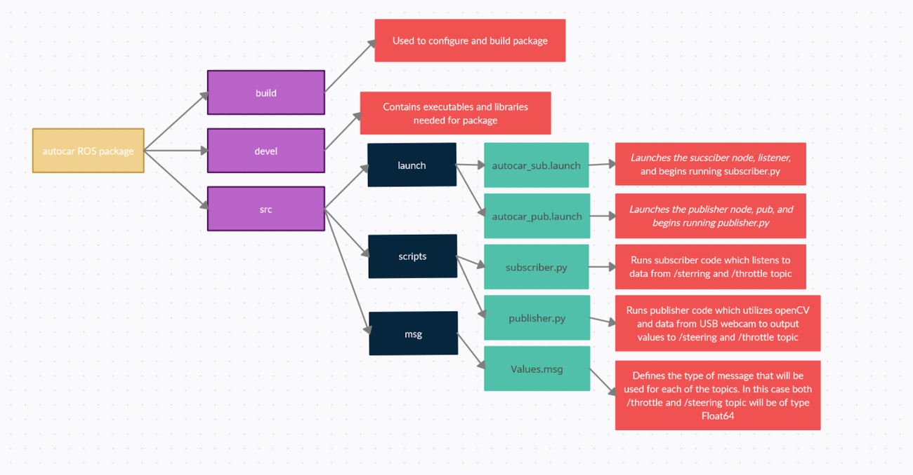

Jetson Nano Developer Kit
Car's main computer with a micro SD card and fan.
Computer on the car that the code with uploaded to. Powered using easily removable batteries in order to stay in constant communication with the car.
Completed December 2020
Initially the goal of our project was to design an autonomous vehicle that would utilize DonkeyAI framework, open CV, and sensors to detect and gather tennis balls in one area to facilitate collecting them after each set. Due to COVID-19, the scope of our project was pivoted to create a ROS package that enables the RoboCar to use images taken through its external camera to be processed through a mask and proportional-integral-derivative tuning in order to read the yellow lines on the external track and drive autonomously; the RoboCar uses a webcam to read the yellow lines and compute a centroidal value that it follows.
In order to prep for this project I took numerous classes on ROS from Robot Ignite Academy.
We set up a GitHub repository where the code used by the vehicle is stored. The repository contains an ROS package which is designed to be used with our car. The following diagram displays the overall structure of the ROS package:
The overall gist of the package is that two commands are used to achieve the goal of the program. When inputting the command roslaunch autocar autocar_pub.launch the publisher node pub is created. This command also begins running the publisher.py which sends the data from the USB webcam into an openCV program and detects lanes and publishes a value to the /steering and /throttle topic. Then to start the subscriber simply write the command roslaunch autocar autocar_sub.launch after this the car should begin driving autonomously.
The publisher is a modified and upgraded version of the simple_cv_racer that was provided to us. It takes an image from the USB webcam and uses OpenCV to perform several color masks in a thin region of the photo and converts this into steering and throttle values using a PID controller. It then publishes these values to their respective topics. We created a mask for the yellow of the center line, one for the orange of the turn lanes, and finally one for the white of the outer lanes. These masks were denoised using a kernel of ones that way any small patches of color would be eliminated and would not affect the steering of our car. We then find the largest area of pixels in each mask and find the x coordinate of the center of that area. We then calculate a histogram of the amplitudes for each mask and select the position in the histogram with the highest amplitude as another x coordinate. These two x coordinates are averaged and we then look to see what we got. If there was no orange line detected which indicates that the car is on a straight the car will attempt to steer to the yellow position, it will also lock its wheels so that there will be less deviation from the straight line. If it does detect an orange line indicating that it is on a turn it will drive to a weighted average of the two x coordinates and will unlock its wheels so it has its full range of motion. Unfortunately we are not doing anything with the white data although some ideas we had for it are discussed in the future work section.
The subscriber simply subscribes to the two topics and then leverages the Adafruit Servokit library to communicate with the Adafruit PCA9685 and writes the values to the channels specified in the config object.
Technology that I used while working on this project
Car's main computer with a micro SD card and fan.
Computer on the car that the code with uploaded to. Powered using easily removable batteries in order to stay in constant communication with the car.
Used software to change the upper and lower color HSV value bounds when detecting lines.
A combination of a histogram and centroid method were used to isolate the area where the yellow lines were found. This was effective because if the amount of yellow we want the car to follow isn't specified then the car will speed off randomly. This is because there are small amounts of yellow detected everywhere on the track (including the green).
Accompiened by a ESC
Used PID to adjust the steering and throttle depending on what situation the car is in. Programmed to slow car down around curves, and when large amounts of yellow are not present.
Positioned using a 3d printed base
Mounted at the front of the car so that it is able to detect yellow pixels. Camera detection window was adjusted using OpenCV because we wanted the car to focus on reacting to what it is right in front of.